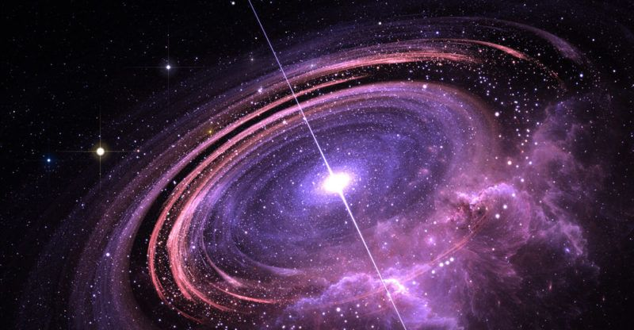

ژ لایێ زانستی ڤە، تەمامیا ماددەیێن گەردوونێ د ناڤ خاڵەکا تاک یا زۆر چڕ دا کۆم ببوو (Singularity). پاشان ئەڤ خاڵە بەرفرهە بوو. هەروەسا ل ساڵا ١٩٢٩ زانا "ئیدوین هابڵ" دۆزییەوە کو ژئێک کێشان ب بەردەوامی پتر ژ ئێک دوور دکەون، واتە گەردوون د هەر چرکەیەکێ دا یێ بەرفرهە دبیت و دکشێت.
"أَوَلَمْ يَرَ الَّذِينَ كَفَرُوا أَنَّ السَّمَاوَاتِ وَالْأَرْضَ كَانَتَا رَتْقًا فَفَتَقْنَاهُمَا..."
الأنبياء: ٣٠ - "ئەرێ ئەوێن کافر بووین نەدیتن کو عەسمان و عەرد پێکڤە یێن پێڤەنووسای بوون (رتقاً)، پاشان مە ئەو ژ ئێک جودا کرن و ژێک ڤەکرن (فتقناهما)..."
"وَالسَّمَاءَ بَنَيْنَاهَا بِأَيْدٍ وَإِنَّا لَمُوسِعُونَ"
الذاريات: ٤٧ - "و مە عەسمان ب هێز و شیان ئاڤا کر، و ب ڕاستی ئەم یێن بەرفرهە دکەین (لموسعون)."